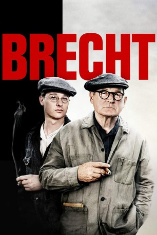
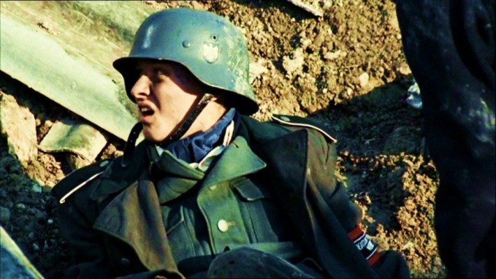
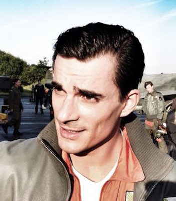
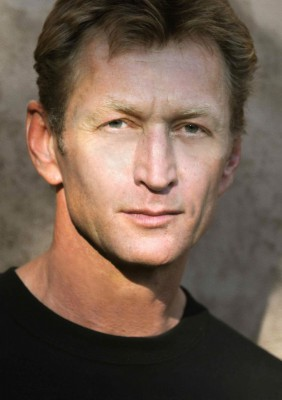

#10957 Brecht
 
 IMDB-Wertung: 6.7 / 10
IMDB-Wertung: 6.7 / 10  Metascore: 0
Metascore: 0 
Doku-Drama über das Leben und Wirken von Bertolt Brecht in Deutschland.
Jahr: 2019
Dauer: 90 Minuten
FSK: 12
Land: Deutschland Studio: ARTETonspuren:
Untertitel:
Auflösung: 1080p (1920x1080) Größe: 6799 MB
Genre: Drama, Geschichte, Biographie
Regisseur: Heinrich Breloer
Drehbuch: Heinrich Breloer
Soundtrack: Hans-Peter Ströer
Darsteller:
 Burghart Klaußner als Bertolt Brecht
Burghart Klaußner als Bertolt Brecht-  Tom Schilling als Bertolt Brecht (1916-1933)
 Trine Dyrholm als Ruth Berlau
Trine Dyrholm als Ruth Berlau- Maximilian Klas als Manfred Wekwerth
 Leonie Benesch als Elisabeth Hauptmann / young
Leonie Benesch als Elisabeth Hauptmann / young Maria Dragus als Regine Lutz
Maria Dragus als Regine Lutz- Anna Herrmann als Käthe Reichel
 Friederike Becht als Marianne Zoff
Friederike Becht als Marianne Zoff Götz Schubert als Ernst Busch
Götz Schubert als Ernst Busch Franz Dinda als Egon Monk
Franz Dinda als Egon Monk Anatole Taubman als Ernst Josef Aufricht
Anatole Taubman als Ernst Josef Aufricht Gitta Schweighöfer als Souffleuse
Gitta Schweighöfer als Souffleuse Rafael Gareisen als Otto Müllereisert
Rafael Gareisen als Otto Müllereisert Jessica McIntyre als Marta Feuchtwanger
Jessica McIntyre als Marta Feuchtwanger-  Hannes Wegener als Dr. Lion Feuchtwanger
 Lukás Bech als Conférencier
Lukás Bech als Conférencier- Petra Buckova als Gerda Goedhart
- Brigita Cmuntová als Lotte Lenya
- Ole Eisfeld als Harald Paulsen / Mackie Messer
-  Ivan G'Vera als Doctor Los Angeles
- Petr Stach als Singer and hurdy gurdy
- Adele Neuhauser als Helene Weigel
- Lou Strenger als Helene Weigel
- Laura de Boer als Isot Kilian
- Mala Emde als Paula Banholzer
- Karolina Horster als Käthe Rülicke
- Franz Hartwig als Caspar Neher
- Ernst Stötzner als Caspar Neher(1940-1956)
- Marie Luise Stahl als Angelika Hurwicz
- Jaroslava Laufenová als Elisabeth Hauptmann / older
- Havelka Vojtech als Hans Bunge
- Vincent Redetzki als Martin Pohl
- Thimo Meitner als Walter Brecht
- Markus Hering als Brecht's father
- Hoskovec Vaclav als Charley Weber
- Kerstin Thielemann als Marie Röcker
- Michal Dudek als Palitzsch
- Jan Santroch als Sagredo
- Jakub Krejca als BK Tragelehn
- Filip Cáp als Camillus Recht
- Philipp Schenker als Herbert Jhering
- Manuel Zschunke als Arnolt Bronnen
- Tomás Slavícek als Bezold
- Stella Adorf als Sophie Brecht
- Andreas Buntscheck als Georg Pfanzelt
- Oscar Olivo als Kurt Weill
- Thomas Meinhardt als Wilhelm Girnus
- Matthias Rheinheimer als Paul Albert Krumm / Faust
- Lutz Blochberger als Wolfgang Böttcher
- Neduha Samuel als Horst Kube
Datei: X:\2019(A-F)\Brecht (2019, FSK12, 1920x1080) Teil 1.mkv seit 11.04.2019
Festplatte: HD 2018(G-Z)-2019(A-Z)
 Es gibt insgesamt 60 Filme in der Gruppe '2019(A-F)'
Es gibt insgesamt 60 Filme in der Gruppe '2019(A-F)'